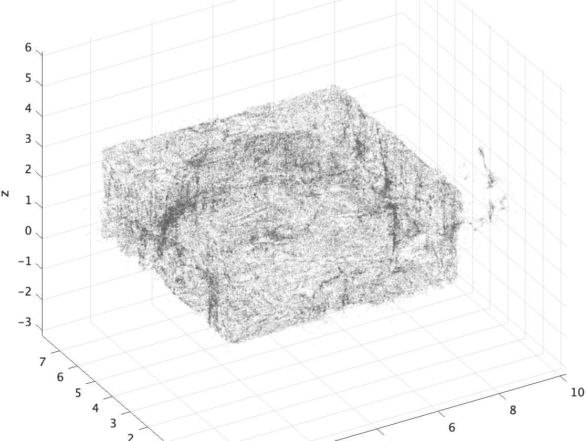
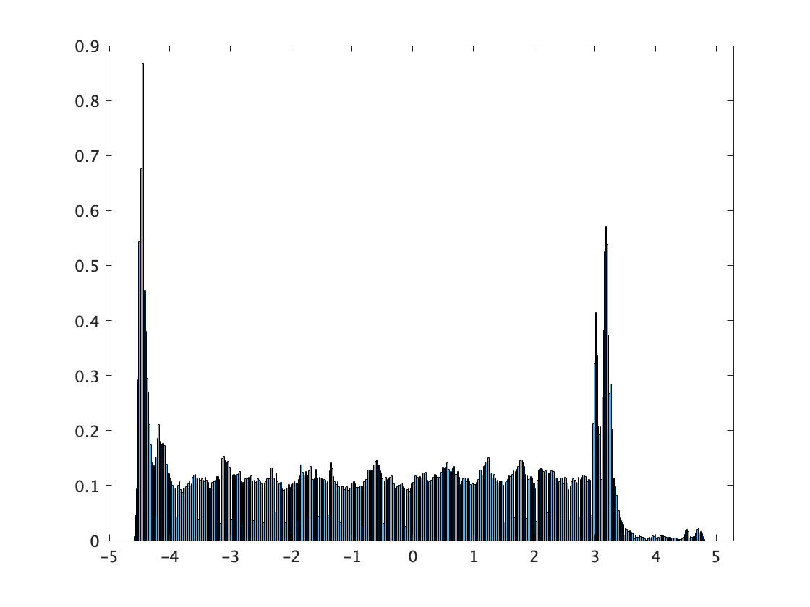
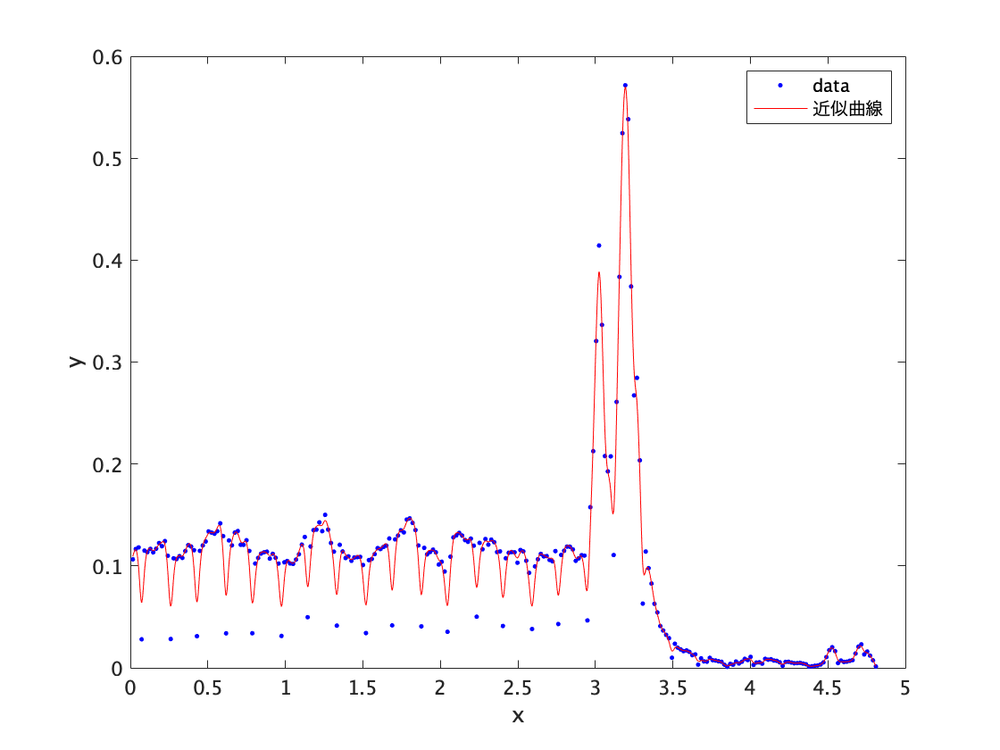
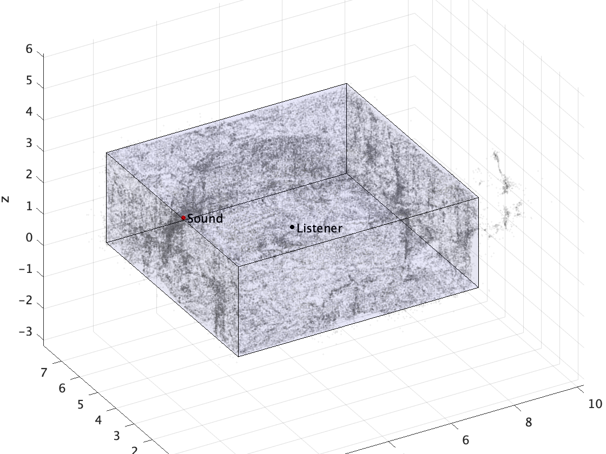

利用者に対して音源に係るコンテンツを提供するための情報処理システムであって、利用者によって保持されて、空間をスキャンして空間に存在する対象物までの距離を取得する取得部と、前記取得部において取得された前記距離に基づき前記対象物の空間における座標情報を算出する座標情報算出部と、前記座標情報算出部において算出された前記座標情報と、予め空間に仮想的に配置されたアンカーの位置情報とに基づき、前記アンカーを検出するアンカー検出部と、前記座標情報算出部において算出された前記座標情報に基づき、空間における残響特性を算出する残響特性算出部と、前記残響特性算出部において算出された残響特性に基づき、音源を調整する音源調整部と、前記アンカー検出部においてアンカーが検出されたときに、前記音源調整部において調 整された音源に係るコンテンツの利用者に対する提供を制御するコンテンツ制御部とを備える、情報処理システム。
上記請求項の前記座標情報算出部において算出された前記座標情報に基づき、空間における残響特性を算出する残響特性算出部に関して、発明した内容を詳細に記述できる部分があるので、それを紹介する。
本発明では、以下の工程によって残響特性を推定する。
現状の技術では、LiDARによる点群データから、それぞれの座標軸上における密集点を計算し、その点を測定した空間における壁と推定することで、箱型の単純な部屋形状を算出する。
ある空間の点群データ 
得られた点群データから、それぞれの座標軸における各点のヒストグラムをプロット。
上記点群データでのx座標におけるヒストグラム 
そのヒストグラム形状を元に曲線当てはめを行い、その座標軸におけるピーク点(点群データが最も存在する場所)を特定。
x座標の正の値において、曲線当てはめを行った時のプロット。 
ここでは、曲線当てはめの方法として、平滑化スプラインを使用した。 この曲線当てはめの手法は他にもガウス関数を用いた曲線当てはめなど、さまざまな方法を用いることができる。
そのピーク点を部屋における壁とみなすことで、合計六つの壁の位置が計算できる。
得られた6点の壁の位置を合算に、箱型の部屋形状を作成する。この部屋の中に、別のシステムによって計算されたアンカー位置・利用者位置の座標を入れ込む。
部屋形状の推定結果。青色の箱が推定された部屋形状を表している。 
本メソッドでは、部屋形状を単純な箱型であると限定し、かつ壁の位置の推定を曲線当てはめを用いた手法を取ることで、高速かつ、モバイル端末でも容易に処理できる程度の計算量で行える点が利点である。 今回は、LiDARデータから単純な箱型への変換のみであるが、より複雑な部屋形状を推測することにより、より現実に近い残響特性を計算できる可能性がある。
空間内の任意のアンカー位置・利用者位置の残響特性の算出には、Allen and BerkleyによるMirror image methodを用いる。 これを使用するには、以下のパラメータが必要である。
上記パラメータのうち、音速は計測した部屋の気温の情報があれば、以下の計算式により計算を行うことができる。
331.5+0.6t m/s (tは摂氏温度、１気圧の場合)
サンプリングレートは実際のデバイス内で使用されているサンプリングレートを使用する。
アンカー位置、利用者位置、部屋の寸法は、上記部屋形状の推定において取得できる。
残りの部屋の残響時間、もしくは各壁における反射係数であるが、以下の２通りの方法で計算することができる。
ここでは、1.の残響時間を計算する方法を説明する。
初めに、形状の推定した部屋内でインパルス応答を行う。 インパルス応答の測定はTSP信号を使った測定、ピンクノイズを用いた測定、さらにはバルーンや手拍子を使った測定でも良い。
得られたインパルス応答から、残響時間を計算する。 残響時間の計測方法としては、一般的にISO 3382-2:2008という規格が用いられる。
本メソッドでは、一点のインパルス応答と、部屋の寸法を設定することで、任意のアンカー位置、利用者位置を容易に推定できる利点がある。 今後LiDAR情報を詳細に分析することにより、部屋の情報をより多く推定することが可能になれば、Mirror image methodだけでなく、有限要素法 (Finite element method)や、音線法(Sound Ray Tracing method)による、より詳細な室内音響情報の推定を行うことが可能である。
Mirror image method
Allen, J. B., & Berkley, D. A. (1979). Image method for efficiently simulating small‐room acoustics. The Journal of the Acoustical Society of America, 65(4), 943-950.
インパルス応答の測定方法
佐藤史明. (2002). 室内音響インパルス応答の測定技術. 日本音響学会誌, 58(10), 669-676.
残響時間の計算 ISO 3382-2:2008
ISO 3382-2:2008 Acoustics — Measurement of room acoustic parameters — Part 2: Reverberation time in ordinary rooms
有限要素法
Petyt, M., Lea, J., & Koopmann, G. H. (1976). A finite element method for determining the acoustic modes of irregular shaped cavities. Journal of Sound and Vibration, 45(4), 495-502.
音線法
Krokstad, A., Strom, S., & Sørsdal, S. (1968). Calculating the acoustical room response by the use of a ray tracing technique. Journal of Sound and Vibration, 8(1), 118-125.